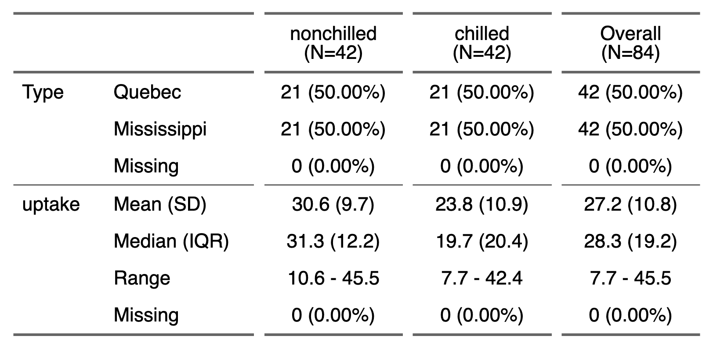

It performs a univariate statistical analysis of a dataset
by group and formats the results so that they can be used with
the tabulator() function.
summarizor(x, by = character(), overall_label = NULL)Arguments
- x
dataset
- by
columns names to be used as grouping columns
- overall_label
label to use as overall label
Note
This is very first version of the function; be aware it can evolve or change.
Illustrations
ft_1 appears as:

ft_2 appears as:

See also
Examples
z <- summarizor(CO2[-c(1, 4)],
by = "Treatment",
overall_label = "Overall"
)
# version 1 ----
tab_1 <- tabulator(
x = z,
rows = c("variable", "stat"),
columns = "Treatment",
blah = as_paragraph(
as_chunk(
fmt_2stats(
num1 = stat, num2 = value, cts = cts, pcts = percent
)
)
)
)
ft_1 <- as_flextable(tab_1, separate_with = "variable")
ft_1
#> a flextable object.
#> col_keys: `variable`, `stat`, `dummy1`, `nonchilled@blah`, `dummy2`, `chilled@blah`, `dummy3`, `Overall@blah`
#> header has 1 row(s)
#> body has 30 row(s)
#> original dataset sample:
#> variable stat cts@nonchilled cts@chilled cts@Overall percent@nonchilled
#> 1 Plant Qn1 5 0 5 0.125
#> 2 Plant Qn2 7 0 7 0.175
#> 3 Plant Qn3 7 0 7 0.175
#> 4 Plant Qc1 0 7 7 0.000
#> 5 Plant Qc3 0 7 7 0.000
#> percent@chilled percent@Overall data_type@nonchilled data_type@chilled
#> 1 0.0000000 0.06097561 discrete discrete
#> 2 0.0000000 0.08536585 discrete discrete
#> 3 0.0000000 0.08536585 discrete discrete
#> 4 0.1666667 0.08536585 discrete discrete
#> 5 0.1666667 0.08536585 discrete discrete
#> data_type@Overall value@nonchilled value@chilled value@Overall
#> 1 discrete NA NA NA
#> 2 discrete NA NA NA
#> 3 discrete NA NA NA
#> 4 discrete NA NA NA
#> 5 discrete NA NA NA
#> blah@nonchilled blah@chilled blah@Overall dummy1 nonchilled@blah dummy2
#> 1
#> 2
#> 3
#> 4
#> 5
#> chilled@blah dummy3 Overall@blah
#> 1
#> 2
#> 3
#> 4
#> 5
# version 2 ----
n_format <- function(n, percent) {
z <- character(length = length(n))
wcts <- !is.na(n)
z[wcts] <- sprintf("%.0f (%.01f %%)", n[wcts], percent[wcts] * 100)
z
}
stat_format <- function(value) {
z <- character(length = length(value))
wnum <- !is.na(value)
z[wnum] <- sprintf("%.01f", value[wnum])
z
}
tab_2 <- tabulator(z,
rows = c("variable", "stat"),
columns = "Treatment",
`Est.` = as_paragraph(as_chunk(value)),
`N` = as_paragraph(as_chunk(n_format(cts, percent)))
)
ft_2 <- as_flextable(tab_2, separate_with = "variable")
ft_2
#> a flextable object.
#> col_keys: `variable`, `stat`, `dummy1`, `@nonchilled@Est.`, `@nonchilled@N`, `dummy2`, `@chilled@Est.`, `@chilled@N`, `dummy3`, `@Overall@Est.`, `@Overall@N`
#> header has 2 row(s)
#> body has 30 row(s)
#> original dataset sample:
#> variable stat cts@nonchilled cts@chilled cts@Overall percent@nonchilled
#> 1 Plant Qn1 5 0 5 0.125
#> 2 Plant Qn2 7 0 7 0.175
#> 3 Plant Qn3 7 0 7 0.175
#> 4 Plant Qc1 0 7 7 0.000
#> 5 Plant Qc3 0 7 7 0.000
#> percent@chilled percent@Overall data_type@nonchilled data_type@chilled
#> 1 0.0000000 0.06097561 discrete discrete
#> 2 0.0000000 0.08536585 discrete discrete
#> 3 0.0000000 0.08536585 discrete discrete
#> 4 0.1666667 0.08536585 discrete discrete
#> 5 0.1666667 0.08536585 discrete discrete
#> data_type@Overall value@nonchilled value@chilled value@Overall
#> 1 discrete NA NA NA
#> 2 discrete NA NA NA
#> 3 discrete NA NA NA
#> 4 discrete NA NA NA
#> 5 discrete NA NA NA
#> Est.@nonchilled Est.@chilled Est.@Overall N@nonchilled N@chilled N@Overall
#> 1
#> 2
#> 3
#> 4
#> 5
#> dummy1 @nonchilled@Est. @nonchilled@N dummy2 @chilled@Est. @chilled@N dummy3
#> 1
#> 2
#> 3
#> 4
#> 5
#> @Overall@Est. @Overall@N
#> 1
#> 2
#> 3
#> 4
#> 5